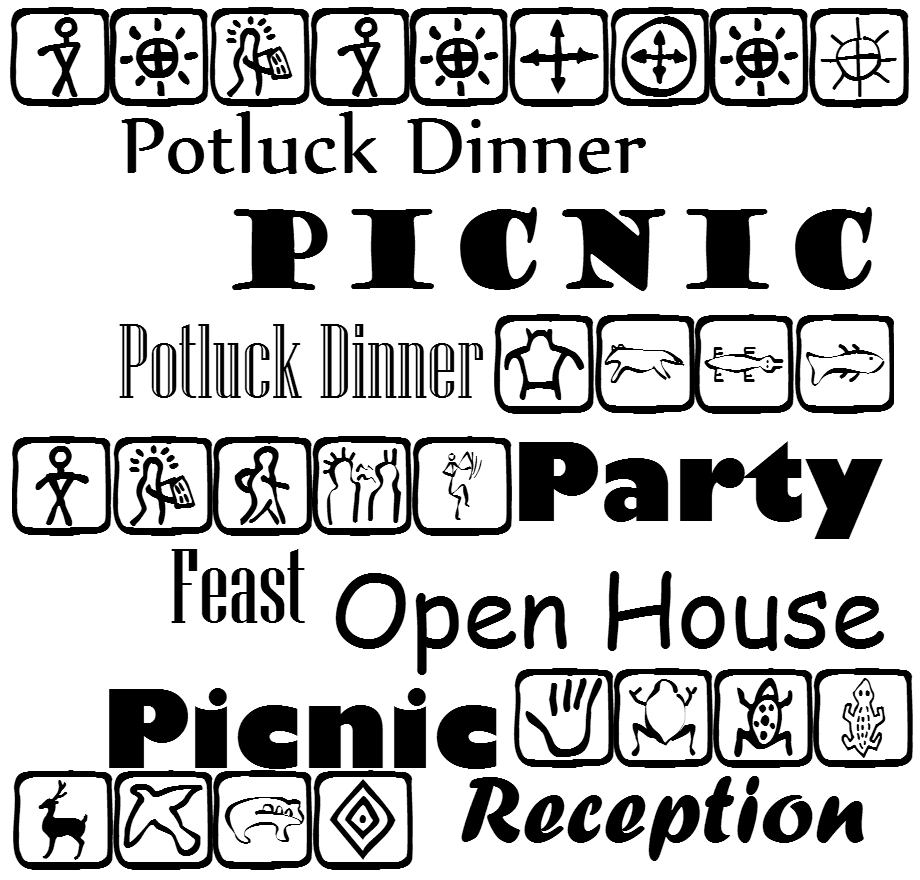

Publish a Google Spreadsheet
(or share an Excel file)

Is your organization's database district-aware? Is it committee-aware?
Do you use modern data visualization?

CommitteeMaps.org

Let's build this!Find key constituents from your website visitors
Does your organization bring people together?

How to
- Publish a Google Spreadsheet (or share an Excel file)
- Legislator Dots? or Boundaries?
- Choose a color scheme
- Decide where your scores break in the legend (for instance, are 0 and 100 their own colors?)
- Optional: Do you want to set up default tweets for each legislator? If so, add them in the spreadsheet
- How wide is the space on your website? Do you need to contact a site developer to make it wider, or remove a sidebar.
- Do you have very small districts? If so, we'll want a visualization solution that offers zoom
-